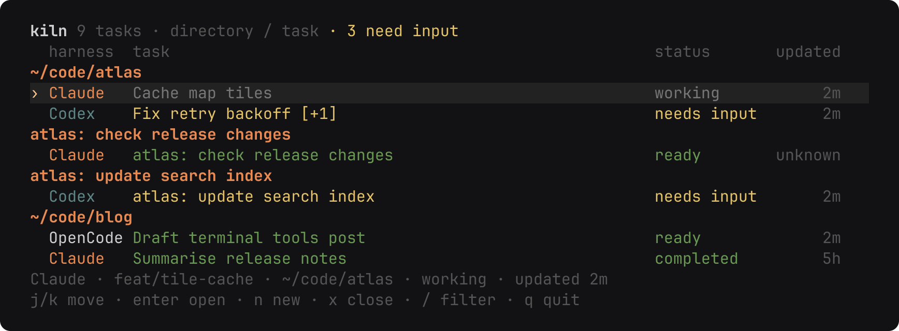
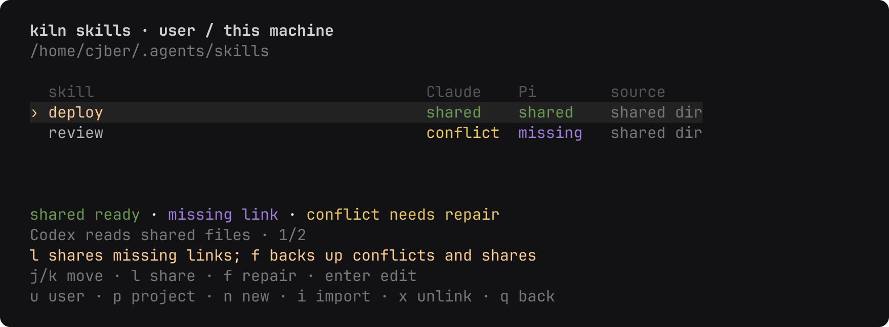
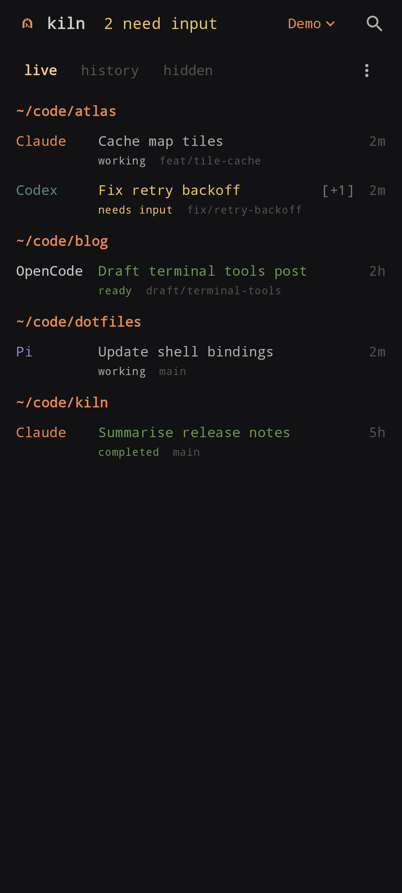
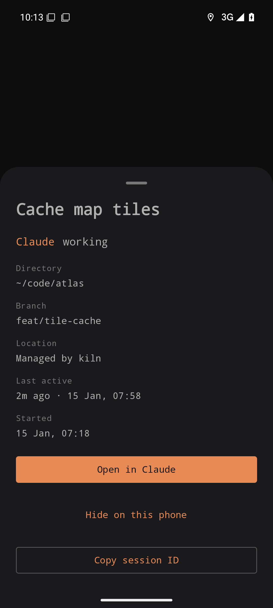
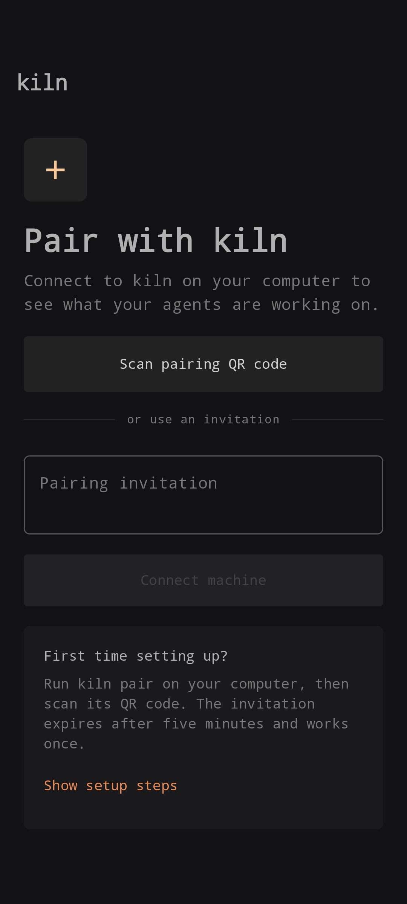

Keeps each agent's own TUI
Claude and Codex keep their terminal interfaces for messages, prompts and approvals. kiln opens them and steps back, without starting a second agent.
Terminal session list
kiln opens native Claude, Codex, OpenCode and Pi terminal sessions and pairs with an Android phone. Each agent keeps its own terminal interface. kiln discovers the sessions, reads their status and gives you one place to find them.
$ paru -S kiln-agents-bin # or: paru -S kiln-agents $ bun install --frozen-lockfile $ bun start

Arch, or from source with Bun
The AUR package, from a terminal.
paru -S kiln-agents-bin # standalone binary
# or: paru -S kiln-agents # Bun source packageInstall Bun, fzf and tmux first, then:
bun install --frozen-lockfile
bun startInstall Claude Code, Codex CLI, OpenCode or Pi, and sign in through each provider's own CLI. Native commands and their arguments can be overridden in settings.
Native agents, one view
Claude and Codex keep their terminal interfaces for messages, prompts and approvals. kiln opens them and steps back, without starting a second agent.
kiln reads each provider's own status updates. Terminal output never establishes activity, and activity it cannot read stays unknown rather than guessed.
Sessions sit under their directory, with child sessions collapsed. The header counts input requests even when children are closed. Filter by title, directory, agent or status.
Sessions running in a terminal stay in the list as stopped after a restart. Enter resumes the conversation in a new kiln session in the same directory.
Codex Cloud tasks and optional Claude cloud sessions keep their provider status and verified HTTPS links. They cannot be closed or prompted from kiln.
Press s to edit ~/.config/kiln/config.toml. Choose the sort order, the
detach key, which agents appear and whether cloud listings are on. Unknown keys are
errors.
Press S in a selected project to manage the skills your agents share. n creates a
skill and opens SKILL.md in $EDITOR, and Enter edits it.
Conflicting content is backed up before repair, and kiln does not overwrite unowned same-name skills. The skills view shows what is shared, missing or in conflict.
kiln ships its own skills for agents: kiln-agents lets them message each other,
kiln-config changes its settings and kiln-skills repairs shared skills. kiln syncs them at start, or install them
first with npx skills add cjber/kiln. Agents can read
llms.txt for the short version.

Android over Tailscale
The Android app lists native sessions and cloud tasks. Opening a linked session goes
through the provider's installed app or browser using verified HTTPS links. Pair a phone
with kiln setup, or with kiln pair for another device.



Pairing invitations expire after five minutes and work once. Sign in to Tailscale before
running kiln serve. OpenCode sessions open in OpenCode's own web UI on your
PC, reached over Tailscale. The APK is on the
releases page; add the repository to
Obtainium for updates.
The short version
| Key | Action |
|---|---|
| j k, arrows | Select a session |
| Enter | Open a session or cloud task |
| n | Choose an agent, then a directory through fzf |
| / | Filter titles, directories, agent names and status |
| Tab | Expand children |
| o | Cycle list order |
| x | Close a kiln-owned session after confirmation |
| s | Edit settings |
| S | Open shared skills |
| r | Refresh |
| q | Quit the list |
New sessions run inside kiln's private tmux server. Ctrl+Q returns to the list and leaves the session running.
kiln setup
Installs a user service that survives reboots, configures Tailscale Serve and prints a pairing QR.
kiln serve
Runs the phone server in the foreground until the terminal closes.
kiln serve --origin https://your-machine.example
Uses your own HTTPS tunnel instead of Tailscale Serve.
kiln serve --local
Listens on localhost only, without tunnel setup or a printed invitation.
kiln pair
Generates another invitation while the server is running. The origin defaults to this machine's Tailscale HTTPS name.
kiln devices
Lists paired devices.
kiln revoke <device-id>
Disconnects a phone without affecting agent sessions.
kiln skills list
Lists shared skills. Also: kiln skills share <name> and kiln skills sync.
Settings, sort orders, cloud behaviour, the phone server and the full verification steps are in the README. That is the place for anything not covered here.
Read the README